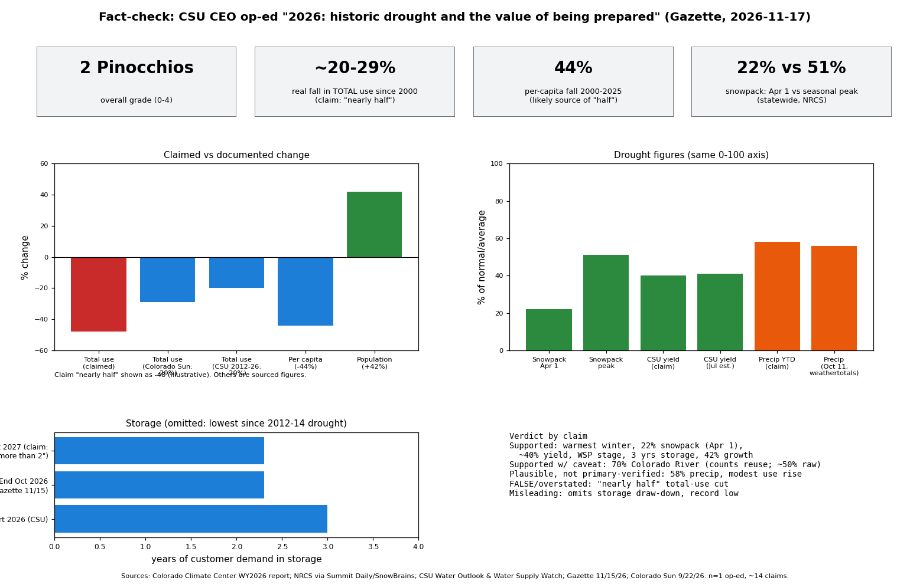

The op-ed by Colorado Springs Utilities CEO Travas Deal (Gazette, 2026-11-17) is mostly accurate on the drought, but says total water use fell "nearly half" since 2000 while the city grew 42%. Sourced figures show total deliveries fell about 29% (Colorado Sun, 2000-2025) and per-capita use fell 44%; the "half" figure matches per-capita use, not total use. Grade: 2 Pinocchios on the Washington Post 0-4 scale.
| Claim | Verdict | Evidence (source, period) | Confidence |
|---|---|---|---|
| Winter 2025-26 warmest on record | Supported | Colorado Climate Center WY2026: warmest winter, water year (131 yrs of data) | high |
| Snowpack reached only 22% of normal | Supported, with context | Statewide SWE 22% of 30-yr median on Apr 1 (NRCS via Summit Daily, SnowBrains); others 23-24%. Seasonal peak was 51% of average (Climate Center). Op-ed does not date the 22%. | high |
| CSU had only 40% of typical yield | Supported (approx.) | CSU July update: 41% of average, lowest on record; CEO says 40% final | medium |
| Declared Water Shortage Preparation | Supported | CSU Water Shortage Preparation page; Gazette 3/18/26 (approved Mar 18) | high |
| ~70% of supply from Colorado River Basin | Supported with caveat | CSU/CPR: 60-70% counting reuse; ~50% of raw supply; one-third Arkansas Basin | medium |
| Three years of demand in storage at start of 2026 | Supported | CSU Water Outlook: 77% full = 3.0 yrs (Feb 2026); Gazette 11/15 | high |
| Total use down nearly half since 2000 while city grew 42% | Not supported / overstated | Colorado Sun 9/22/26: deliveries -29% 2000-2025, population +42%, per-capita -44%. Maven's Notebook 2025: ~-20%. Gazette 11/15: 88,000 to 70,000 AF/yr since 2012 (-20%). 'Nearly half' fits per-capita, not total. | medium-high |
| Per-person use significantly lower | Supported | per capita -44% 2000-2025 (Colorado Sun) | high |
| Pikes Peak region precip YTD 58% of average | Plausible, not verified | No official YTD figure found; weathertotals 8.27 in vs 14.81 normal (56%) on Oct 11; precip.ai says -12%. Station and period differ. | low |
| Customer use rose modestly in irrigation season | Not checkable here | No season demand data found; Feb 2026 demand was 1.6% below Feb 2025 | low |
| Native grass lawns need only one day of watering per week | Not checkable here | Gazette/Sun describe native grass conversions; no primary watering-schedule source found | low |
| Begin 2027 with more than two years of storage | Consistent | 2.3 years at end of Oct (Gazette 11/15); a projection | medium |
| State climatology predicts no better than average snowpack | Not checkable here | No state climatology statement found; Gazette 11/15 notes a strong El Nino may help | low |
| Water is 'a shared resource' etc.; 50-year planning horizon | Opinion / not checked | Rhetoric; 50-yr horizon not independently confirmed | low |
Answer/Key values/Sources/Confidence are given per row. The strongest discrepancy: total use "nearly half" versus 20-29% (n=3 independent reports, 2000-2025 or 2012-2026).
Preparedness framing leaves out that reserves were drawn down by about 0.7 years in ten months, and that restrictions may come in 2027 if storage is projected under 1.5 years by April 1. Rounding per-capita progress into a total-use claim flatters the conservation record.